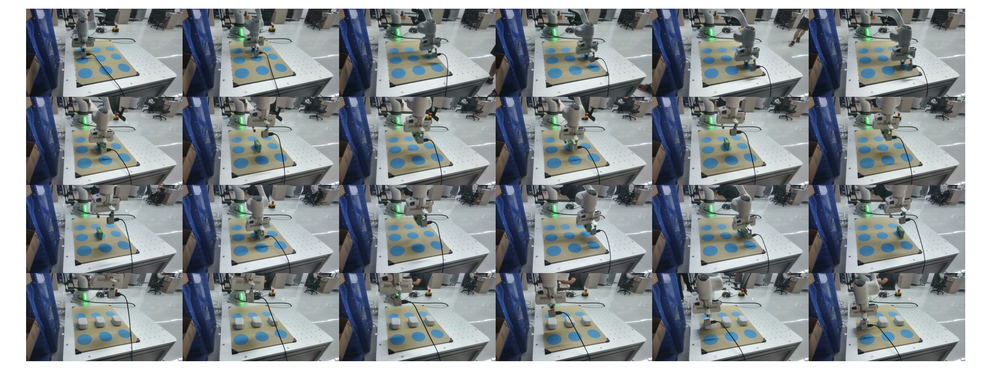
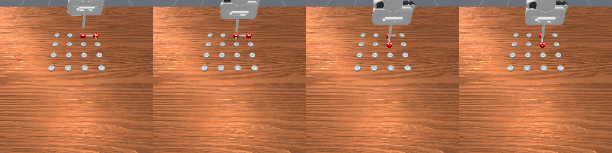
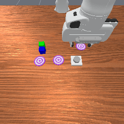
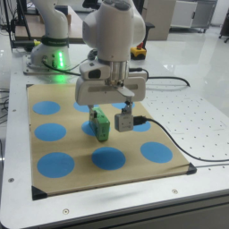

Visual Buffer
Recent frames arrive as a stream. The buffer holds enough context for the next update, then clears when evidence is committed.
observe compress

Streaming reasoning for executable memory in robot control
PAL turns a stream of visual evidence into semantic events and a future-ready subtask list, so a robot can use what it saw before it needs to act.
01 / The problem
Long-horizon manipulation often hides the evidence that determines the next action. A cube is moved early in a video, a pattern is demonstrated once, or progress must be counted across repeated picks.
A short visual window can execute a motion. It cannot reliably recover an event that has already left the frame.
PAL makes future-relevant evidence executable before the moment of action arrives.

simulation evidence02 / The idea
PAL separates recent pixels, remembered events, and actions that are ready to run. Each layer has a different time scale and a different job.
Recent frames arrive as a stream. The buffer holds enough context for the next update, then clears when evidence is committed.
Task-relevant changes become compact natural-language events: what moved, where it ended, and why it matters later.
Future subtasks are appended before execution. The low-level VLA selects the next item without searching the whole visual history.
03 / Interactive walkthrough
Select a stage to replay one PAL update. The visual evidence, semantic memory, executable list, and current action update together.

A stream of observations enters PAL.04 / Evidence
Across memory-dependent RoboMME tasks, PAL improves most when the relevant evidence arrives long before execution.
| Method | Short-video | Long-video | In-context | Episode-start |
|---|---|---|---|---|
| FrameSamp-Modul | 41.87% | 46.00% | 27.05% | 72.96% |
| MemER | 37.52% | 28.00% | 41.00% | 65.11% |
| PAL | 45.26% | 81.60% | 46.20% | 77.33% |
04a / Simulation evidence
The simulation rollouts make object identity and action order easier to inspect. These clips come from the main evaluation results and complement the real-world demonstrations below.
Repeated progress is carried through a long episode.
simulation / successful rolloutAn earlier placement is recovered when the target is no longer visible.
simulation / successful rolloutSemantic event memory tracks which cube was hidden.
simulation / successful rollout05 / Real world
Four tasks test different kinds of long-horizon recall: count progress, recover a hidden layout, remember an earlier placement, and reproduce a dense pattern.

06 / Technical details
The page keeps the main story readable while the source figures remain one click away for a closer technical look.
Each query consumes the previous memory state and a new image chunk, then emits an event increment, a subtask increment, and the current subtask.
Stage 1 expands sparse annotations across a timing band so the model learns both what to write and when evidence is sufficient.
Self-labeling filters incorrect or duplicate updates and keeps accepted rollouts closer to the model's inference distribution.